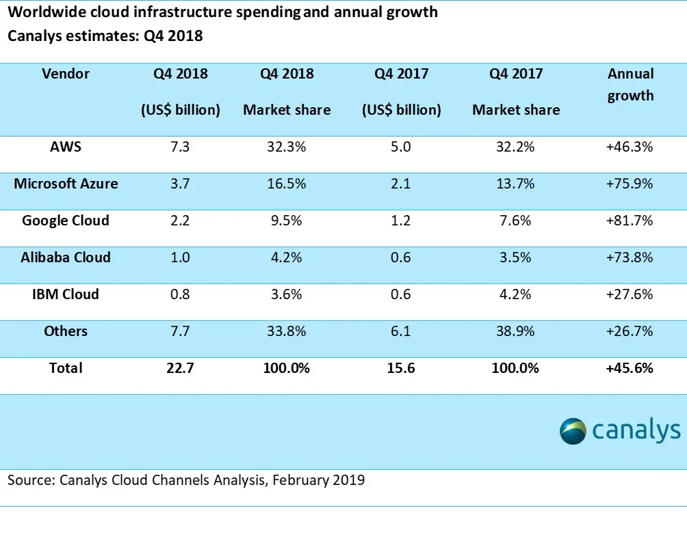
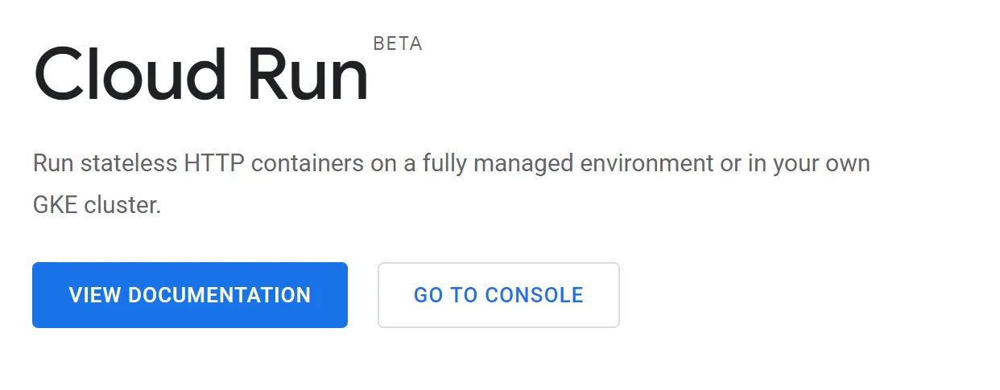

Google Cloud Platform is one of the leading cloud platforms. It is the fastest growing platform right now. One of the major feature GCP offers compared to other cloud platforms is simplicity. As a developer or a DevOps engineer, all you have, the least steep learning curve. All you have to do is perform a few clicks and you are ready to go, you can do complex configurations later on.
Google Cloud has highest Annual Growth: Article
Recently Google had its Google Next 2019, where they announced the latest changes to their cloud platform. There are many great services and products to try out. I will be focusing on one of the coolest product they announced: Cloud Run.
The Evolution of Computing
Serverless Computing
Ever since its inception in the form of AWS Lambda, Serverless computing has become a defacto for building microservices which cost you only when you use them.
Pros
- Pay only when used
- Auto-scaling
- No server management
Cons
- Vendor lock-in
- Limited language support
- Strict project structure
Containers
Containers have been very popular among people who want to ship their entire application as a single package with all the required dependencies in itself.
Pros
- Flexible project structure
- Any language/framework
- Portable across platforms
Cons
- Always running (24/7 costs)
- Server management needed
- No scale-to-zero
Unlike traditional hosting, where you have to manage always running VMs which scale up and down but cost you 24/7 when running, serverless only costs you when a user visits your website or your API is called.
Serverless is very popular right now but it has some major caveats. You have to follow the vendor's rules to configure your project structure. e.g. AWS says you have to structure your project in ABC ways in order for it to be run on AWS Lambda. Same goes for Google and other platforms. And then there is this problem of vendor lock-in, i.e. if you built your application for AWS Lambda, and want to move to GCP, good luck with that. Another problem is Language and Framework support which is certainly limited by each vendor.
On the other hand, containers also have been very popular among people who want to ship their entire application as a single package with all the required dependencies in itself. This provides the flexibility of configuring your own project structure as well as frameworks and libraries. Developers love containers because if it is working on my computer it will certainly work on others' as well :D. But again, their major problem is that they do not scale down to zero i.e. you will always have something running 24/7.
The Perfect Combination
What if the pros of both serverless and containers are combined? Cloud Run is exactly what I have been looking for a long time. Let me package my application like a container but I also want to pay only when the user uses my container. So basically Cloud Run is serverless container platform.
Real-World Example: Flask to Cloud Run
If you use Python and built a web server using Flask, you must be hosting it on a server which is running 24/7 whether user visits or not. I tried to shift my Flask app to AWS Lambda, it was quite a hassle to use Chalice instead of Flask.
GCP: Cloud Run
From Flask to Cloud Run
But with Cloud Run, all I have to do is package my Flask application as a docker container and duh! It's running serverless.
Traditional Flask
Always running, always billing
AWS Lambda
Need to restructure with Chalice
Cloud Run
Just containerize your Flask app!
Google Cloud Run
Revolutionary serverless container platform that combines the best of both worlds.
Benefits
- Package as Docker container
- Pay only when used
- Any language/framework
- Zero vendor lock-in
- Scale to zero
- Easy deployment
Easy Migration
Move your existing applications without code changes
Cost Effective
Pay only for actual usage, not idle time
Auto-scaling
Automatically scales from zero to handle any load
Language Agnostic
Support for any programming language or framework
Current Limitations
Even though Cloud Run is a revolutionary tech for developers, it still has some major problems. One of the major limitations I face is computed resources. Just like any other serverless platform, Cloud Run's computer resources are very limited.
Known Limitations
- Compute Resources: Limited CPU and memory allocation compared to traditional VMs
- Stateless Nature: Containers cannot have persistent volumes attached
- Cold Starts: Initial request may experience latency when scaling from zero
- Request Timeout: Maximum request timeout limitations for long-running tasks
Note: You can use Cloud Run on GKE for more control, but that would not be 100% serverless and you'd lose the scale-to-zero benefit.
Future of Cloud Computing
Cloud Run represents a significant step forward in cloud computing, bridging the gap between serverless functions and container orchestration. It offers developers the flexibility they need while maintaining the cost benefits of serverless architecture. As the technology matures, we can expect many of the current limitations to be addressed, making it an even more compelling choice for modern applications.
Thanks for reading. In this article, I just wanted to highlight the new technology and its comparison with old tech. You can read my article on how to actually use docker to package your existing application and deploy it to Cloud Run here:
Learn More
Check out the official Cloud Run documentation to get started